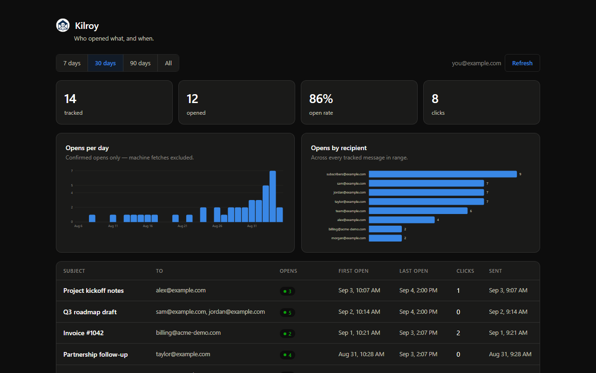
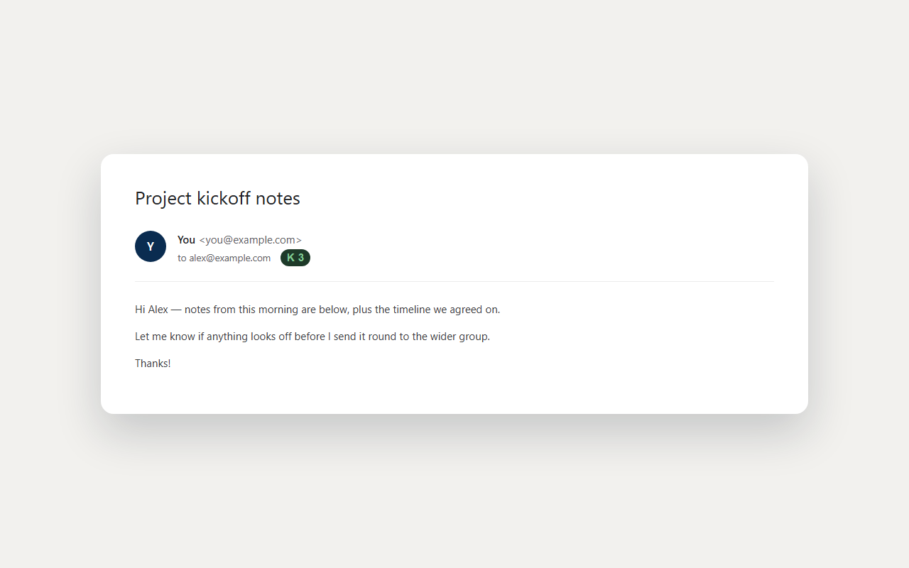

Kilroy
was here.
It's the mark GIs left on walls to say someone had passed through — and it's exactly, and only, what an email open tells you. Kilroy shows you when your Gmail is read, and refuses to make up the rest.
Free · No credit card · Sign in with Google and you're tracking

Three steps, then it's quiet.
Install once and sign in. From then on Kilroy sits beside Send and does its work without getting in the way.
Add to Chrome
Install from the Web Store and sign in with Google. Nothing to configure — your data lands in a place only you can read.
Compose as usual
A Tracking chip appears next to Send. Leave it on, or click it off for any single message.
Watch for the mark
When it's opened, a ✓✓ and a count appear right on your sent message — and roll up in your dashboard.
Everything a tracker should do — and the discipline most don't.
Read receipts, right in Gmail
A double-check and an open count sit on the sent message itself, in the thread — no tab-switching to know it landed.

Link click tracking
Optional, and far stronger than an open — a click survives image blocking and means someone acted.
A real dashboard
Opens per day, opens by recipient, and every tracked message — click any row for the raw fetch history.
Bots filtered out
Security scanners, Apple Mail's privacy prefetch, and your own re-reads are detected and set aside.
Off per message
Tracking is a switch beside Send, not a default you can't escape. One click turns it off for that email.
Bring your own database
Open source, and one click points Kilroy at your own Supabase — then nobody, not even us, can read it.
What an "open" actually means.
An open is an image being fetched — not proof a person read your email. Commercial trackers paper over that with a city and a device. Kilroy tells you what each number can, and can't, support.
It was opened, probably more than once. The first-open time is the most reliable field in the whole system.
Delivered, but every fetch so far looks automated — a scanner or a privacy prefetch. Not evidence anyone read it.
No map, on purpose. Gmail proxies every image, so the address that arrives is Google's, not your reader's. A city here would be a lie.
Three opens means at least three. Caching hides some repeats, so counts are a lower bound — never a total.
The recipient list stays yours.
Mailtrack, Streak and the rest route every message through their servers, and your contacts become their asset. Kilroy is built the other way.
Install and go
Your tracking lives in a database run by Relay Labs, scoped to your account and isolated from every other user by row-level security. No setup, nothing to run.
Or hold it entirely yourself
One click points Kilroy at your own free Supabase project. Then the data never touches our infrastructure — and because it's open source, you can verify every word of that.
Know when it's read.
Make up nothing.
Free, open source, and honest about what a tracking pixel can actually tell you.